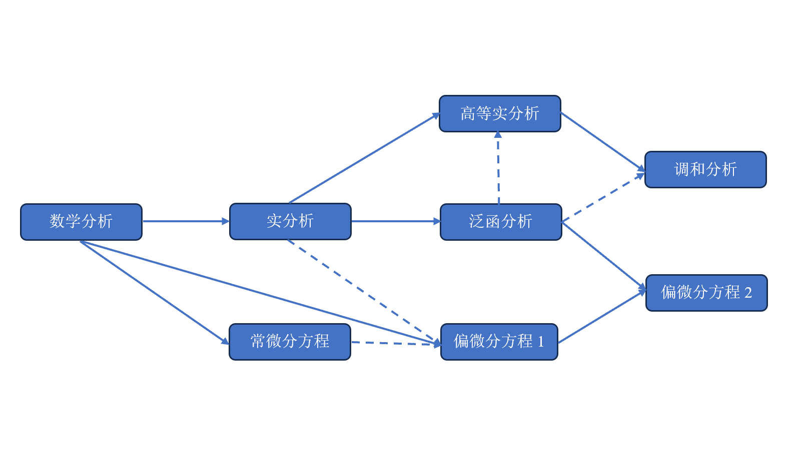

科大数院分析与微分方程基础课程
English Version|中文版
常年开设的课程与本科培养方案
-
科大数院常年开设的分析与微分方程方向的课程主要分为四个层次：通修课程、专业核心课程、本研贯通课程、专题选讲课程。
通修课程（面向全校的必修课程）：数学分析(A1)-(A3)
- 专业核心课程（本专业的必修/选修课程）：
- 常微分方程（原“微分方程1”将拆课为“常微分方程”和“偏微分方程”）
- 实分析、偏微分方程、泛函分析
- 复分析（其实这门课“不太分析”）
- 本研贯通课程（本科高年级/研究生低年级课程）：
- 高等实分析、现代偏微分方程（原“微分方程2”）、
调和分析（本课程在科大课程体系内为“硕士课程”，但对学习分析与微分方程方向的同学来说这门课至关重要，应当与“现代偏微分方程”处于同一级别） - 多复变函数论
- 二阶线性椭圆方程（附加说明同“调和分析”）
- 研究生专题选讲课（非常年开设，取决于任课老师）：
- 非线性椭圆方程、非线性色散方程、流体偏微分方程选讲、微分动力系统等。
以下是官方培养方案的时间安排（带*的为必修课，带#的为专业选修课，没标记的是自由选修课）：
| 学年\学期 | 秋季（上） | 春季（下） |
| 大一 | 数学分析(A1)* | 数学分析(A2)* |
| 大二 | 数学分析(A3)*、微分方程1* | 实分析*、复分析* |
| 大三 | 泛函分析*、高等实分析# | 现代偏微分方程#、调和分析 |
| 大四 | 二阶线性椭圆方程、多复变函数论（也可放在大三） |
学习顺序、课程大纲与参考资料（非官方，个人建议仅供参考）
-
下图是我个人认为的较为合理的学习顺序：其中偏微分方程1=古典PDE，偏微分方程2=“现代偏微分方程”这门课

{kind=link}
其中“实线A→B”是指A几乎必须是B的先修课程，“虚线A→B”是指A、B可以同时修读，或者B仅用到A里面一点点内容和理解。
- 注：上述表格仅是一个学习进度的参考，不是说一定要在对应学期就修读/学习相应内容。如果你觉得课太多，那么微分方程课的优先级高于分析课。因为实分析类的课程本质上是在教你“基本设定和语言的合理性”，牺牲一些严谨性是不影响学习微分方程的，相反学习微分方程反而给你提供了更多的实例，助你更深刻地理解发展各类分析工具的动机（在泛函分析/研究生实分析/调和分析基础的学习中应当会有类似的体会）。
私以为主动地、自发式地自主学习是最利于培养、加深自己对这门学科的理解的学习方式。对于本科实分析层次以上的内容，如果你还指望通过老师上课教你来获得知识（而不是自己主动去找书看、了解前沿等等），那可能确实要问一问自己是否对此方向真正有兴趣。
超前学习/提前修课注意事项（提前选课请务必量力而行，个人建议仅供参考，GPA炸了本人概不负责！）
以最终目标为“偏微分方程”（尤其是流体、色散、kinetic、相对论等非椭圆、抛物型的发展方程）为例，如下学习进度安排是一种具有一定可行性的选择。 需注意的是，“微分方程1” 将在不久的将来拆课为“常微分方程”和“偏微分方程”，此处假定拆课后二者均安排在秋季。| 学年\学期 | 秋季（上） | 春季（下） |
| 大一 | 数学分析(A1) | 数学分析(A2)、实分析 |
| 大二 | 数学分析(A3)、微分方程1、高等实分析 | 现代偏微分方程、调和分析 |
| 大三 | 二阶线性椭圆方程 | |
| 大四 |
我个人倾向使用的课程大纲和参考资料：实调和分析基础 、偏微分方程1、2。注意，这里的“大纲”仅是一门12-16周的课程所涉及的内容，并不是说这个学科只有这些东西。
Q：为什么要提前修课/超前学习？
A：首先我必须声明：超前学习/提前修课主要面向的人群是那些学有余力、对数学感兴趣、且将来有志于从事数学研究的同学（当然这可能并不包括大三之前的我）。我自己在读本科的时候其实并没有提前修读过任何课程，相反因为在大二结束时没想清楚就选了不适合自己的方向而在大三挣扎了相当长的时间。但当我临近大四时转而决定学PDE这个自己真正感兴趣的方向之后，我意识到干巴巴地上课是很无聊的事情：花很多时间去应付课内的作业和考试，到头来却很难知道学了这些东西有什么用，好像时间就这么被浪费了一样。
后来是有两件事情让我产生了新观点：一是我从大三下学期开始断断续续自学调和分析，二是我PhD二年级期间正式开始读文章和做问题（第一年其实也是浪费在漫无目的地看书和准备博资考上了）。前者让我领悟到，不是“先有XXX理论，再去寻找这个理论的XXX应用”，而是“先有XXX问题，这些问题可能来自物理模型、来自几何等等各种学科，人们在研究该问题的时候发现需要使用XXX工具；在这之后才是把XXX工具发展成一套更完善的理论并寻求更广泛的应用/与其它领域的关联”。 而后者则是让我意识到，从本科高年级开始（大概就是把实分析、泛函分析这个层次的基础课搞定之后）应当按照自己的兴趣方向进行“按需学习”。换句话说，当你真正开始读前沿paper或者上手做一个具体问题的时候，你才知道自己可能需要去用什么工具，去补充哪方面的知识。
那么我认为，对于本身就已经具有扎实基础、学有余力、对数学有浓厚兴趣且有很强执行力的学生而言，就应该尽快把基础知识学完，早点开始接触真正的科研，不要把大好青春耗在漫无目的地修一堆课上（或许这就是科大一直以来鼓励学生做大研、大创等项目的原始动机吧）。“科研”是中国科大的招牌之一，而不是那句“少废话，你GPA多少？”
- 提前选课请务必量力而行，切勿跟风学习。如果确实要提前选课，请务必保证在自己GPA不崩（包括物理课、英语课、政治课、以及自己的专业必修课）的情况下再谨慎安排。特别提醒，高年级的课程很可能会和本年级的必修课时间冲突，因此你大概率需要通过“个性化选课”来提前修课，但是个性化选课一旦选中是不能退课的（否则成绩单上将出现“退课”成绩）。
- 请在大量学习数学知识的同时注意培养自己的语言能力（包括中文、英语），这对基础数学方向的学生来说至关重要。相比国内其它顶尖高校，科大学生整体的语文、英语水平可能略逊一些（这自然与招生方式有关）。我已经见过相当数量这样的同学，其数学能力不错，但是后续发展因为语言交流能力的大幅欠缺而被极大拖累。 即使你选择一直在国内发展，快速（概括式地）阅读论文的能力、论文写作的能力（行文流畅程度、用词准确程度、组织文章架构的能力等等）仍然是不可忽视的。除了读、写之外，听、说能力也需要稍加培养，参加会议时，语言交涉能力显得尤为重要。尤其是当你被邀请在会议上作报告时（无论是中文报告还是英文报告），你表达能力（流畅度、进度控制、详略是否得当，以及“控场能力”）的好坏，会直接影响到你在听众心目中的第一印象，长期下去这会与同行对你的评价高度相关。